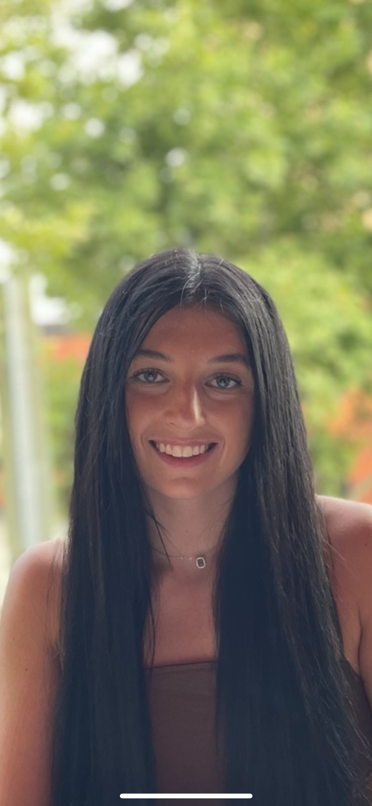

University of Maryland Student
Dedicated to ensuring customers had a pleasant dining experience by using time management to ensure food was coming out at the correct times, giving ample time to enjoy each course. Analyzed menu offerings so that I could have a broad knowledge of our offerings to provide knowledgeable recommendations to customers by being proficient in the menu, grossing an avg.15% more than others. Improved collaboration skills to work in a fast-paced environment and be able to think at a moment’s notice.
Collaborated with a team of 3 other college-aged students to research and analyze data relating to LGBTQIA+ youth. Present research findings on language styles and conversation slang LGBTQIA+ youth use to portray struggle and emotion through an online chat platform.Learn critical concepts in qualitative and quantitative data analysis and analyzing scholarly journals.
Assisted local families with childcare for children under five while in high school. Created innovative ways to keep children entertained without the use of technology. Grew my communication skills by conversing with parents about their children and their interests and grew my network.
Aided inner city school children with daily homework and worked on skills such as reading and writing. Developed an understanding of the importance of inclusion and how to diversify for the better by working with other big brothers and sisters from other areas around the Flint area. Explained to my mentees the importance of school and assisted them with homework twice a week and saw improvement in their reading levels jump drastically after working with me.